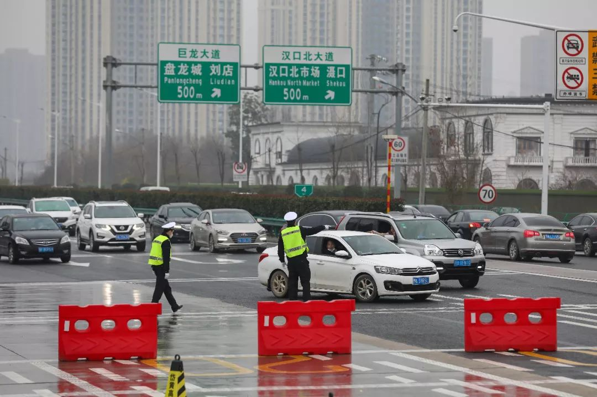

钟南山发话前，武汉这位医生向附近学校发出疫情警报
原文链接 备份链接 1月28日下午三时，中国青年报·中国青年网记者实地探访武汉市第五医院输液室。 本文约4534字 预计阅读时间12分钟 中青报·中青网记者 王嘉兴 这是一位坚守在抗击新型肺炎一线医生的自述。她经历了疫情初期所在医院的 …

武汉封城、公共交通全部关停以后，陈述杰和几个朋友一起召集起一支4000多人的爱心车队，为武汉市的医务工作者们提供后援支持。直到1月25号，团队里已知至少三人出现发热，公益接送医生行动暂时停止，他们仍然在帮忙运输医疗物资，用行动持续为这座处于黯淡冬日的江城传递温暖。
口述 | 陈述杰
记者 | 李秀莉
1月23号，我们3-4个人凑在一起产生了做公益车队的想法。当时封城的政策出来，地铁、公交都停了。正好我们与医院有工作联系，看到有些即使不是发热门诊或呼吸科的医生，出租车司机也不愿意载，他们甚至需要步行十几公里回家。有些医生在没有防护的情况下还要在医院里吃、睡，确实很辛苦，所以想尽自己的一份力。再三考虑，我们决定开始拉群。
一开始是在朋友圈征集车辆，拉朋友加入。1月23号招募到400多人，到1月24号早上，人数开始爆发，1月25号包括志愿者和医护人员在内，已线上聚集起上万人。整个过程我们没做任何宣传，单纯靠人传人的形式。至于为什么24号开始人数猛增，可能是很多24小时值班的医务人员不太关注外界信息，封城当天还没有意识到这个问题，等到封城的第二天，要上班的或者下夜班的都反应过来了，这个时候需求就爆炸了。这些人分布在大约23个群里，每个群300-500人不等，其中4000人左右是爱心车主，其他都是医护人员。除此以外还有物资转运群、物资捐赠群等，它们都有和红十字会、卫建委对接。

远征 摄
由于我们是自发临时组织的民间团体，所以一开始管理非常混乱，尤其是从400个人突然升到近万人的时候。直到很多好心人站出来承担群管理的工作，才逐渐恢复秩序。现在每个群至少有一个管理者在帮忙协助上传、下达。提示大家安全以及反馈一些重要的信息。
拉人进群的同时，我也和很多打车公司联系，希望他们能够把一些技术或者后台系统借给我们，或者是参与到行动，但是要么联系不上，要么他们在武汉地区停运，要么遭到拒绝。没办法，就只能自己搞。我对接了一个朋友的公司，请他们帮忙开发一个简易版本的H5，实现简单的接单和下单功能。当然他们也是纯帮忙，公益性质。虽然有很多医务人员想向我们捐款，我们也都拒绝了，因为怕性质变了。
我们主要通过车主所在的区域与出发地划分服务范围，比如你的出发地在武昌，那么就到武昌接送。当然也不一定，有些车主会在各区流动。大多数情况下是固定接送对象，医护人员把自己的联系方式发到H5系统里，爱心车主来对接。但是因为车主也有自己的时间，医护人员上下班的需求太大了，很多不能全部得到解决。我们也碰到很多从外地经高速路回来的人，因为车子进不来，只能在高速入口等待着，再由我们紧急协调一些车主过去，把他们接回医院。现在我们通过过江隧道时必须量体温。但封城以后不堵车倒是真的，接人很快。

远征 摄
可能考虑到我们队伍比较庞大，有聚集性效应，一开始有人出来阻止过，但是我们协商解决了。后来我们也和交警部门沟通，所有的公益车辆系一个绿丝带。遇到交警阻拦，给他们看一下和医护人员的接送聊天截图。我们自己也制定了管理手册，车主应该做到什么样的防护，以及医生坐车的礼节，比如医护人员尽可能为私家车主提供消毒水和酒精等，都是写在手册里的。同时我们不提倡接病人和发热的医生。甚至尽可能不要接发热门诊以及肺炎治疗门诊的医生，这些规定的目的也是为了防止传播源的扩散至他人的交叉传染。我们尽可能在安全的前提下帮助一部分医护人员。当然我们现在碰到的在发热门诊的医生很少，他们很多下班直接住医院，有自己的隔离措施。医生包括医院自己也不希望把病毒传播出去。
虽然一再强调安全性，仍然有爱心车主在无防护情况下接送医务人员。到1月25号，团队里已知至少三人出现发热，我们就把公益接送医生行动暂时停止了，同时呼吁广大医护人员拒绝热情车主的接送，等待核实是否是因为未进行防护导致的发热或感染。
暂停服务不久，武汉市新型肺炎防控指挥部第九号通告出来，称除经许可的车辆，中心城区区域实行机动车禁行管理，各社区配备足够车辆服务有通行需求的市民。再加上缺少防护物资，车主确实要承担很大的风险，所以我们就基本停止这项志愿服务了。1月25号下午，我在朋友圈里写下：**民间组织的最大使命是传递爱心，传递温暖，给我们的政府有缓冲时间，我们的任务到这里差不多完成了。
**

远征 摄
不过物资运送服务还在持续，昨晚近凌晨两点，我们的五十辆爱心车主还在去接送医疗物资的路上。到今晚，这些物资将会分发到各个医院。也有公司已经做出线上帮扶软件，让需要用车的产品登记，可以接的司机登记好了去领取。我们在中间帮忙分发。
我今年30岁，做媒体工作，是土生土长武汉人，这里就是我的家，很多医护人员都还不是本地人，他们却在前线作战，如果帮不到他们，我寝食难安。但是又要顾全大局不能导致病毒传播，因此真心希望政府征集组织官方支援车队，我一定参加。
作为观察者和在场者，现在武汉给我的感觉是，情况非常不乐观，据我所知，各大医院都缺物资。有些确诊的患者因为床位已满，无法进到医院。很多患有其他疾病的人也进不去，前几天有一个朋友的姥姥摔断了五到六根肋骨，去医院，医生请他回，因为可能会传染，危险很大。那么就没有地方能够医治。面对此类种种，我想我们也做不了太多，惟有尽自己一份小力，让这个城市尽快好起来，让我们的生活早日回到正轨。

#我在疫情一线#
话题征稿持续进行中
《三联生活周刊》全媒体现面向所有读者征稿。包括但不限于：奋斗在疫情一线的医护人员、媒体同行们的故事，专业人士对接下来防疫工作的建议……
此次征稿形式不限：文字（1500～2500字为佳）、图片（原创拍摄）、音频视频（原创录制）都欢迎。大家携手，共度难关！注：请务必保证故事真实、客观，不造谣、不传谣。
《三联生活周刊》微信公号投稿邮箱：zhuangao@lifeweek.com.cn来稿格式：#我在疫情一线#➕标题《三联生活周刊》官方微博参与话题：#我在疫情一线#《三联生活周刊》中读APP投稿邮箱（音频投稿为主，5分钟以内为佳）zhongdu@lifeweek.com.cn
期待你的来稿！
⊙文章版权归《三联生活周刊》所有，欢迎转发到朋友圈，转载开白请联系后台。未经同意，严禁转载至网站、APP等。
原文链接 备份链接 1月28日下午三时，中国青年报·中国青年网记者实地探访武汉市第五医院输液室。 本文约4534字 预计阅读时间12分钟 中青报·中青网记者 王嘉兴 这是一位坚守在抗击新型肺炎一线医生的自述。她经历了疫情初期所在医院的 …
原文链接 备份链接 受到武汉新发布限行令的影响，也出于对车主健康的担忧，善缘车队停止接送医护人员。26日上午，在一些武汉本地的互助群里，提供免费住宿或为医生送餐的武汉市民们还在热议：目前我们还没收到通知，是不是还可以自发去接送医生？ 本 …
原文链接 备份链接 武汉第一批七家定点医院医用物资也存在短缺 防疫物资今日抵达汉口，明日有望缓解 本文首发于南方人物周刊 文 | 本刊记者 徐梅 赵蕾 张宇欣 编辑 | 周建平 蒯乐昊 全文约3479字，细读大约需要9分钟 有的市属一 …
原文链接 备份链接 按规定，他们每接一次病人，都要全车消毒、销毁防护服，不然可能会成为新的传染源。但现实情况是，他们全站连一套防护服都没了。除夕夜里两点，他没有睡觉，发了这半年里唯一一条不是关于女儿的朋友圈，是一条物资的求助。他告诉《人 …
原文链接 备份链接 刘洋 大姨：同济医院一线工作者 医生会暴露感染很大一部分原因是， 有大量市民前期隐瞒病史 ———————————————— 我家在X医院附近，大姨是同济医院的医护人员，她对目前一线的情况比较了解。 20号中央了解武 …